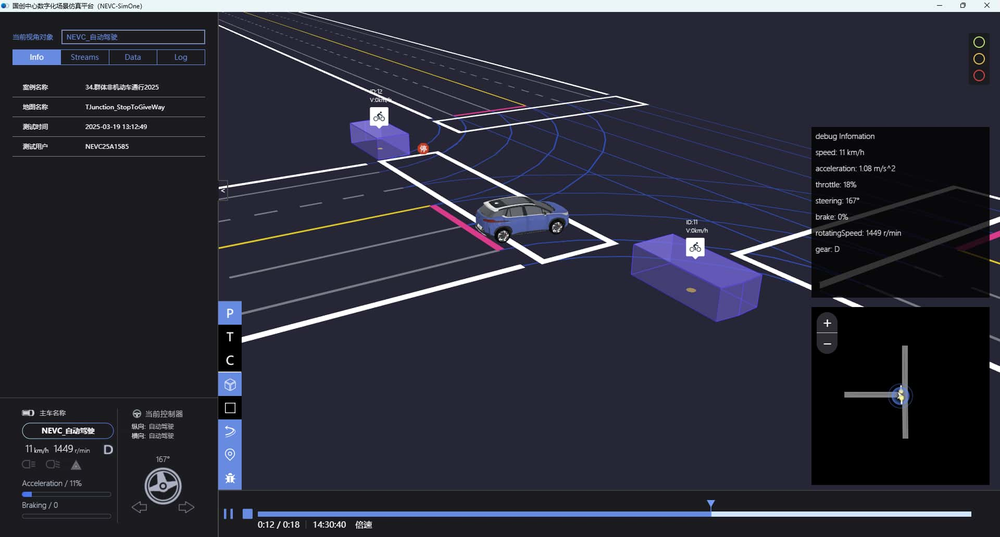

Yixuan Huang
I am an incoming Master of Science student in Robotics for Fall 2026 at University of Michigan.
Go Blue!
News
- [] Received my B.S. degree in Electronic Information Engineering from Wuhan University of Technology.
- [] Admitted to the M.S. program in Robotics at the University of Michigan.
- [] Won the First Prize in the China Undergraduate Engineering Practice and Innovation Ability Competition.
- [] Started my B.S. in Electronic Information Engineering at Wuhan University of Technology.
Education

Robotics Department

Wuhan University of Technology
School of Information Engineering
Honors & Awards

China Undergraduate Engineering Practice and Innovation Ability Competition 2023
First Prize, Ranked 2nd Nationwide 🏆
- [] Academic Excellence Scholarship, Wuhan University of Technology
- [] Outstanding Student Award, Wuhan University of Technology
- [] Academic Excellence Scholarship, Wuhan University of Technology
- [] Outstanding Student Award, Wuhan University of Technology
- [] Academic Excellence Scholarship, Wuhan University of Technology
- [] Outstanding Student Award, Wuhan University of Technology
Leadership & Service
- [–] Student Affairs Director, School of Information Engineering, Wuhan University of Technology
- [–] Student Union Leadership Member, Student Union, Wuhan University of Technology
- [–] Class President, School of Information Engineering, Wuhan University of Technology
Beyond Academia Open the Archive
I'm glad you've made it this far. By now, you probably have a sense of my academic journey and achievements — but that has never been the whole of who I am. Beyond research, there is also life, full of moments, passions, and connections that quietly shape who I am. Here, I hope to share a more personal side of myself: the person I am beyond work.
This space is a personal archive of life beyond academic milestones — quieter, more personal, and perhaps more human. It may include travel notes, reading reflections, photo logs, hobbies, memories, and small thoughts that do not fit neatly into a CV.
Outside work, I enjoy guitar, tennis, table tennis, video games, traveling, and reading — small but meaningful parts of how I learn, rest, and stay curious.